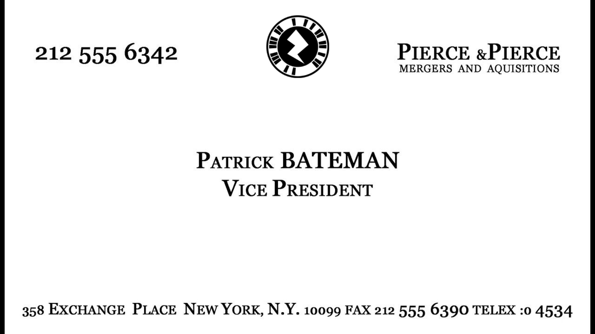

Patrick Beatman AR widget

Descrizione del Progetto
Questo progetto, realizzato attraverso l'uso di Zapworks, sfrutta la realtà aumentata per generare un widget che fa da tributo a quello che è il film di Mary Harron "American Psycho", prendendo quello che è il biglietto da visita di Patrick Bateman e riadattandolo in versione AR
Tecnologie utilizzate
- Zapworks Widget
- Photoshop per la grafica